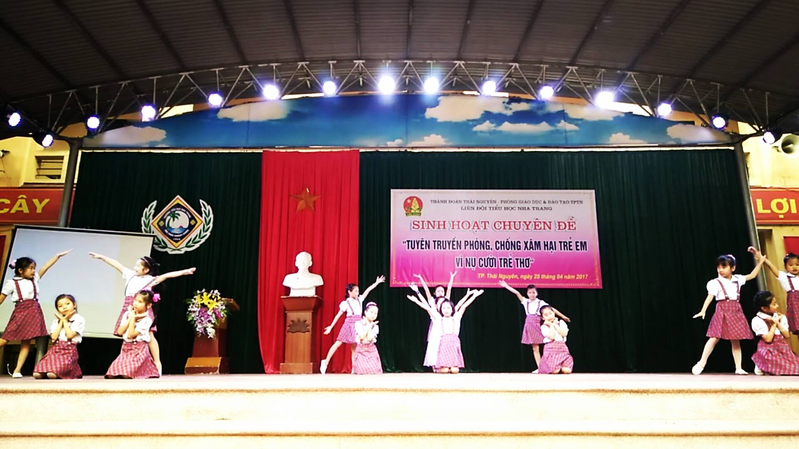
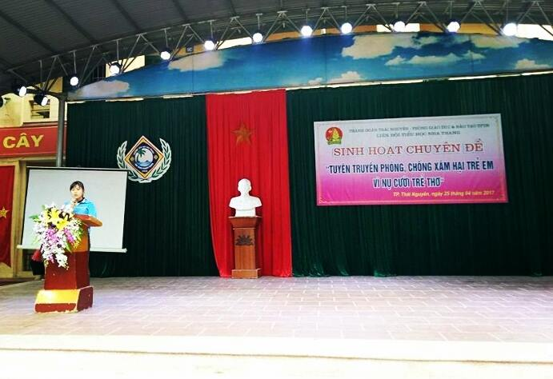

Sinh hoạt chuyền đề "Tuyên truyền phòng chống xâm hại trẻ em vì nụ cười trẻ thơ" Thành phố Thái Nguyên tại Liên đội Tiểu học Nha Trang.

Sinh thời Chủ tịch Hồ Chí Minh luôn dành cho các cháu thiếu niên, nhi đồng tình thương yêu và quan tâm đặc biệt. Với Bác, trẻ em là những mầm non, những người chủ tương lai của đất nước. Bác nói: “cái mầm có xanh thì cây mới vững, cái búp có xanh thì lá mới tươi quả mới tốt, con trẻ có được nuôi dưỡng giáo dục hẳn hoi thì dân tộc mới tự cường tự lập”. Đặt niềm tin và xác định rõ vai trò, trách nhiệm của trẻ em là những người kế tục sự nghiệp cách mạng của Đảng và dân tộc, Bác còn thường xuyên quan tâm nhắc nhở và giao nhiệm vụ bảo vệ, chăm sóc trẻ em cho các ngành, đoàn thể. Trong Di chúc thiêng liêng trước lúc đi xa, người đã đặt nền tảng tư tưởng và nêu tấm gương sáng về việc bảo vệ, chăm sóc và giáo dục trẻ em, ươm “mầm xanh tương lai” của đất nước.
Nhưng hiện nay, tình trạng bạo lực, xâm hại trẻ em ở nước ta trong những năm gần đây có biểu hiện diễn biến phức tạp, gây bức xúc, nhức nhối trong dư luận và xã hội. Vì bạo lực, xâm hại trẻ em không chỉ diễn ra trong cộng đồng hay tại nơi làm việc mà còn diễn ra ngay ở tại gia đình, nhà trường và các cơ sở chăm sóc trẻ tập trung.
Trước thực trạng đó, với mục đích tuyên truyền về các quyền của trẻ em; sự cần thiết và những kiến thức về cảnh giác, phòng ngừa các hành vi dụ dỗ, lừa phỉnh, mua bán trẻ em; cách nhận biết và phản ứng khi bị người khác xâm phạm thân thể, xâm hại…Sáng ngày 25/4/2017, Hội đồng Đội thành phố phối hợp với Phòng Giáo dục và Đào tạo thành phố Thái Nguyên long trọng tổ chức tiết sinh hoạt chuyên đề Tuyên truyền phòng chống xâm hại trẻ em vì nụ cười trẻ thơ tại liên đội Tiểu học Nha Trang.
Tới dự với chương trình có đồng chí Trịnh Thị Hoa -Phó Bí thư Thành Đoàn Thái Nguyên, đồng chí Nguyễn Thị Thu Thảo - Ủy viên Ban thường vụ Thành Đoàn - Phó chủ tịch Hội đồng Đội thành phố Thái Nguyên, đồng chí Đào Quang Nghĩa – Chuyên viên công tác Đội phòng GD&ĐT thành phố Thái Nguyên cùng với hơn 60 đồng chí là giáo viên Tổng phụ trách Đội của các trường Tiểu học và THCS trên địa bàn thành phố Thái Nguyên.
Trong buổi tuyên truyền, các em được tìm hiểu những kiến thức về cảnh giác, phòng ngừa các hành vi dụ dỗ, lừa phỉnh, mua bán trẻ em; cách nhận biết và phản ứng khi bị người khác rủ rê, xúc phạm thân thể, xâm hại, cảnh giác và nhận diện những kẻ có hành vi xấu, làm hại người khác đặc biệt là đối với thiếu nhi thông qua các hình thức diễn tiểu phẩm, trả lời các câu hỏi tình huống do Tiến sĩ Phương Hoa - Trưởng khoa môn tâm lý - Khoa Tâm lý Giáo dục trường Đại học Sư Phạm Thái Nguyên đưa ra và rút ra bài học cho bản thân.
Chương trình "Tuyên truyền phòng chống xâm hại trẻ em vì nụ cười trẻ thơ" do Hội đồng Đội thành phố phối hợp với Phòng Giáo dục và Đào tạo thành phố Thái Nguyên tổ chức tại liên đội Tiểu học Nha Trang đã diễn ra thành công tốt đẹp. Qua buổi tuyên truyền các em thiếu nhi trong liên đội biết được thêm những tình huống có thể bị kẻ xấu lợi dụng để xâm hại và cách phòng, chống bị xâm hại. Dưới đây là một số hình ảnh trong buổi tuyên truyền.
Văn nghệ chào mừng của các em thiếu nhi trong liên đội

Đ/c Trịnh Thị Hoa - Phó Bí thư thành đoàn Thái Nguyên phát biểu tại buổi tuyên truyền
Tiểu phẩm "Bài học nhớ đời"

Các bạn thiếu nhi trong liên đội trả lời câu hỏi tình huống qua tiểu phẩm "Bài học nhớ đời"
Tiến sĩ Phương Hoa - Trưởng Bộ môn Tâm lý – Khoa Tâm lý Giáo dục
trường Đại học Sư Phạm Thái Nguyên giao lưu với các bạn thiếu nhi trường Tiểu học Nha Trang
Tiến sĩ Phương Hoa hướng dẫn các bạn thiếu nhi chơi trò chơi "Đoàn kết"